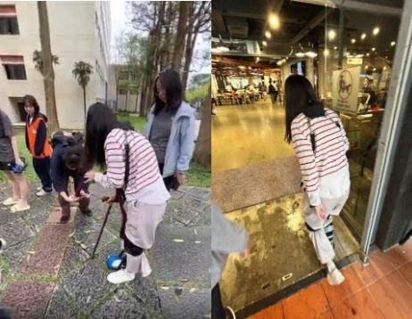
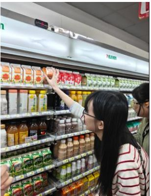

從一次校園障礙體驗開始。我負責照顧模擬感官退化的同學，一路幫她念標示、提醒路況，才發現原本理所當然的資訊，對她來說都成了障礙。
之後的三個專題都從具體的使用困難出發：單手也能撕的公共廁所衛生紙架、用側壓槓桿和配重軟管改造的洗手乳瓶，以及給新手和長者的睫毛夾。睫毛夾加上透明導視框和矽膠防夾護翼，並規劃各零件的材料與製程：PC 射出、矽膠模壓、不鏽鋼沖壓。
真正通用的設計，不應該讓人感到依賴，而應該讓人獨立。
從一次校園障礙體驗開始，之後的三個專題都從具體的使用困難出發。


從一次校園障礙體驗開始。我負責照顧模擬感官退化的同學，一路幫她念標示、提醒路況，才發現原本理所當然的資訊，對她來說都成了障礙。
之後的三個專題都從具體的使用困難出發：單手也能撕的公共廁所衛生紙架、用側壓槓桿和配重軟管改造的洗手乳瓶，以及給新手和長者的睫毛夾。睫毛夾加上透明導視框和矽膠防夾護翼，並規劃各零件的材料與製程：PC 射出、矽膠模壓、不鏽鋼沖壓。
真正通用的設計，不應該讓人感到依賴，而應該讓人獨立。